O que são os Sub Tanks?
Os Sub Tanks são reservatórios de energia que você pode encontrar em algumas fases específicas.
Diferente dos Heart Tanks, eles não aumentam sua vida diretamente, mas armazenam energia extra que pode ser usada a
qualquer momento quando sua barra principal estiver baixa.
Para enchê-los, basta coletar itens de cura (pequenos ou grandes) quando sua vida estiver cheia.
Eles são essenciais para sobrevivência nas fases finais e chefes mais difíceis.
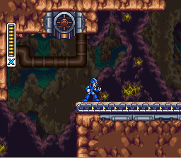
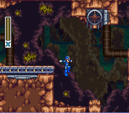
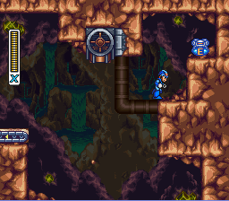
Tunnel Rhino
Chegando aqui, onde a lama cai do teto e tem essa esteira ande um pouco e pule. Sim, está na sua frente.
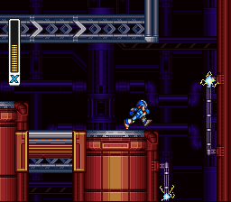
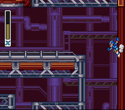
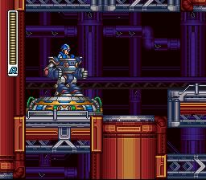
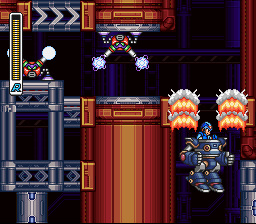
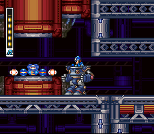
Volt Catfish
Sabe esse ponto? Então, sobe atééé lá em cima. Depois vá para a esquerda, onde tem o “disponibilizador de Carriers”. Selecione o robozão. Vá até o final da plataforma, de onde você veio, e CAIA com tudo. Não, mas cai MESMO! o robozão vai quebrar o chão com o peso dele. Não dizem que pra baixo todo santo ajuda?
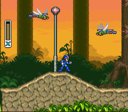
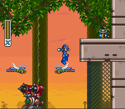
Neon Tiger
Mais pra frente você avistará mais "bichinhos" que te servem de transporte gratuito. Depois de ganhar a carona, escale até a plataforma mais acima, onde tem a escada. Ignorando a escada, vá pela direita, ainda se aproveitando da boa vontade (ou não) dos insetos e uma hora você vê o SUB.
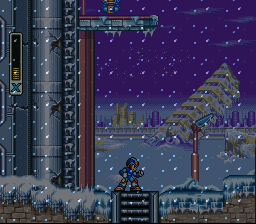
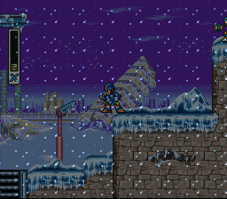
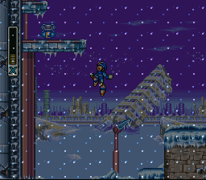
Blizzard Buffalo
No mesmo lugar que começa a nevar do nada, suba nessa plataforma ao lado, pule e use o dash vertical no ar.